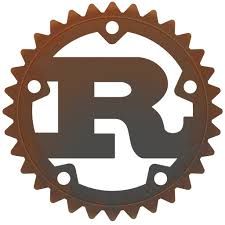

2 Introducción
2.1 ¿Qué es Rust?

Rust es un lenguaje de programación de sistemas que prioriza el rendimiento, la seguridad y la concurrencia sin sacrificar la experiencia del desarrollador. Su diseño se enfoca en evitar errores comunes como las condiciones de carrera, desbordamientos de memoria y fugas de recursos, todo mientras mantiene la flexibilidad de los lenguajes de bajo nivel. Al ofrecer un control preciso sobre la memoria sin necesidad de un recolector de basura, Rust se ha convertido en una opción favorita tanto para el desarrollo de sistemas críticos como para aplicaciones de alto rendimiento, desde servidores web hasta sistemas embebidos.
2.2 Objetivos
Objetivo General
El objetivo principal de este libro es proporcionar a los lectores una comprensión sólida y práctica de Rust, enfocándose en su aplicación para la resolución de problemas espaciales y geoespaciales. A lo largo del libro, los lectores adquirirán las habilidades necesarias para desarrollar soluciones eficientes, robustas y seguras, utilizando Rust como herramienta fundamental en el análisis espacial.
Objetivos Específicos
Introducir los conceptos fundamentales de Rust: Explicar de manera clara los principios básicos del lenguaje, como su sistema de ownership, estructuras de datos y programación funcional, para que el lector pueda aplicarlos en diferentes contextos.
Demostrar la aplicación de Rust en problemas espaciales: Proporcionar ejemplos prácticos y detallados que muestren cómo Rust puede ser utilizado para procesar grandes volúmenes de datos geoespaciales, optimizando tanto el rendimiento como la eficiencia.
Comparar Rust con otros lenguajes usados en análisis espacial: Ofrecer una visión comparativa de Rust frente a lenguajes como Python y R, resaltando las ventajas y casos en los que Rust puede ser una mejor opción en la resolución de problemas complejos de análisis espacial.
2.3 Descripción del Libro
Este libro está diseñado para guiar al lector desde la instalación de Rust hasta su aplicación en análisis espacial, proporcionando una base sólida en el lenguaje y sus conceptos clave. Comenzamos con el Capítulo 3: Instalación, donde te ayudaremos a configurar tu entorno de trabajo. A continuación, en el Capítulo 4: Conceptos Básicos, introducimos los fundamentos del lenguaje, necesarios para entender los ejemplos prácticos. Luego, el Capítulo 5: Ownership explora el sistema de propiedad de Rust, que es esencial para manejar la memoria de manera eficiente. El Capítulo 6: Struct presenta la construcción de estructuras de datos personalizadas, un aspecto clave en la creación de modelos complejos. En el Capítulo 7: Rust en Producción, discutimos las mejores prácticas para llevar proyectos de Rust al entorno productivo, asegurando que tu código sea escalable y mantenible. Posteriormente, en el Capítulo 8: Rust Espacial, nos adentramos en la aplicación de Rust para resolver problemas espaciales complejos, mostrando su capacidad para manejar grandes volúmenes de datos geoespaciales. En el Capítulo 9: Programación Funcional, exploramos cómo Rust incorpora paradigmas funcionales para simplificar la manipulación de datos y mejorar la legibilidad del código. Finalmente, en el Capítulo 10: Otros Lenguajes, comparamos Rust con otros lenguajes populares en el ámbito del análisis espacial, como R y Python, destacando sus ventajas y desventajas.
2.4 Perfil del Lector
Este libro está orientado a profesionales con experiencia intermedia o avanzada en programación, que tengan nociones de otros lenguajes como Python, R o C++. Si ya has trabajado con lenguajes de programación y estás buscando expandir tu conocimiento hacia Rust, este libro es para ti. No es necesario ser un experto en análisis espacial, pero se espera que tengas una comprensión básica de los principios de programación y estés familiarizado con la resolución de problemas complejos.
2.5 Resumen
En resumen, este libro te guiará a través de los fundamentos de Rust, proporcionándote las habilidades necesarias para aplicar el lenguaje en la resolución de problemas espaciales. Desde la instalación hasta la programación funcional, cada capítulo está diseñado para ofrecerte una comprensión progresiva del lenguaje y su uso práctico. Al final, habrás adquirido las herramientas para implementar soluciones eficientes y robustas en Rust, ya sea en el análisis espacial o en otros campos de alta demanda técnica.